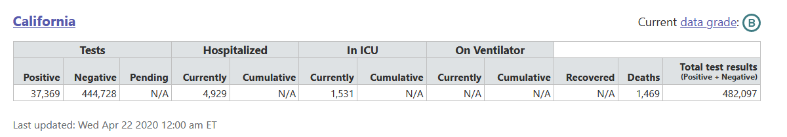
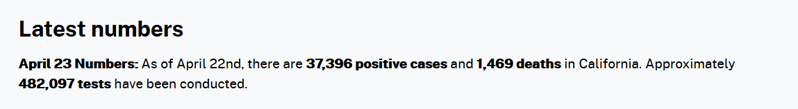
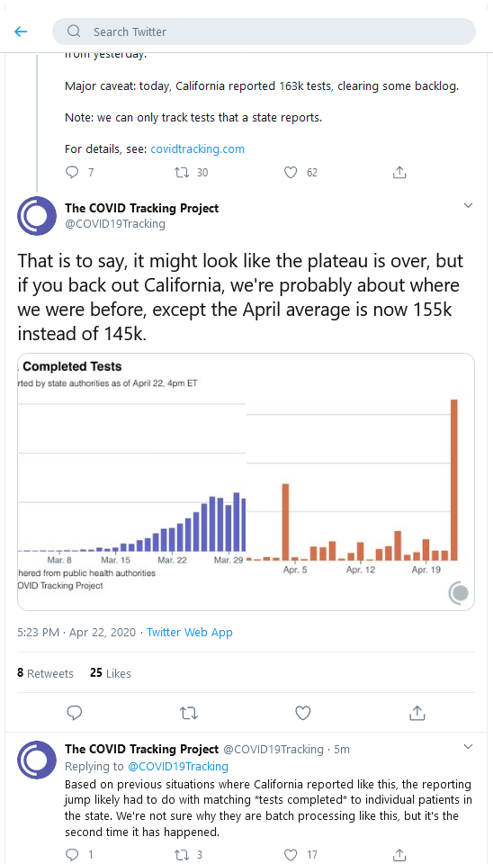

California Testing data for 4/22 isn't matching the data source by a large margin
I checked the testing total and saw a huge jump in number of tests conducted. This seems to be from California but the reported figures in historical data (165,229) do not match the state’s dashboard (8600). Has there been a new data source or is this in error?
Comments
Hello,
I believe Total number of test should be 308K.
All the way on the bottom:
“Latest numbers April 22 Numbers: As of April 21st, there are 35,396 positive cases and 1,354 deaths in California. Approximately 308,700 tests have been conducted. At least 292,906 results have been received and 7,200 are pending.”
California has updated their dashboard and page to report the tests now. Closing this issue.
From https://covidtracking.com/data/state/california#historical 
From https://covid19.ca.gov/ 
Hi @Grumpicorn
The tests were announced by Governor Newsom today and are not reflected on the dashboard yet.
Here is our tweet about this:
